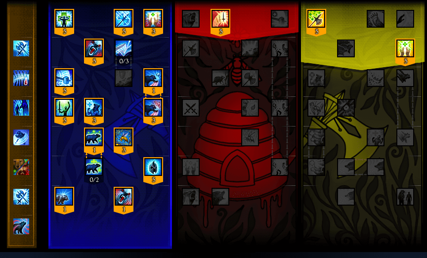
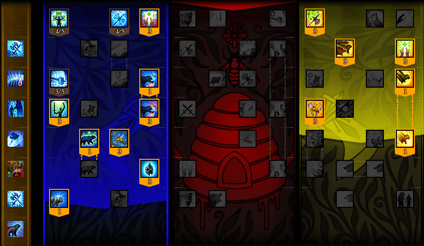
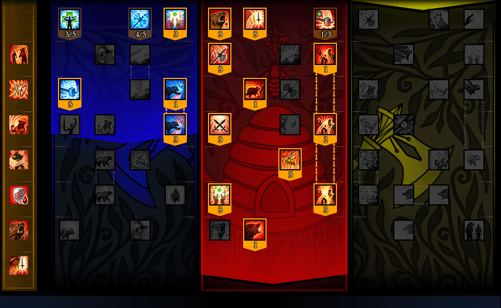
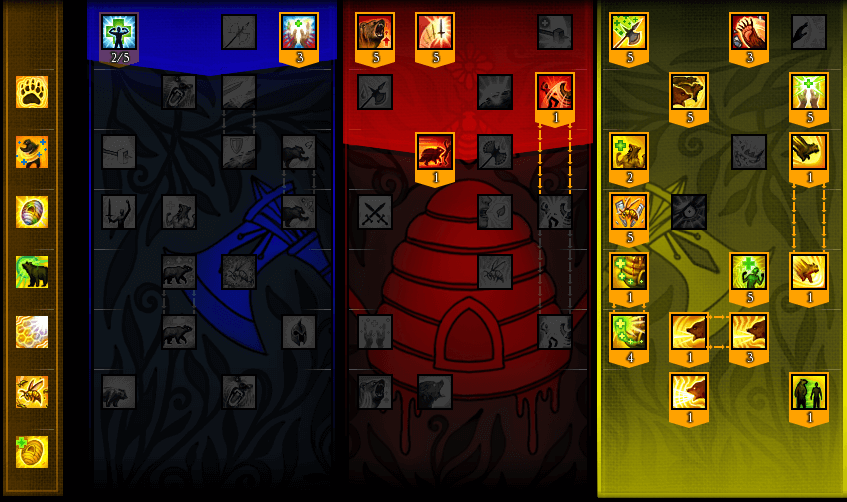

作者：yaiba_ab 来源贴吧
http://tieba.baidu.com/p/4156612709?see_lz=1 原文地址
蓝特PVE（坦克天赋）
熊坦的特点应该和守望类似（对守望这个职业几乎等于无知。。。。）目前楼主仅仅测试过新副本RC，仇恨值相当彪悍，本身硬度也合格，兼具一定的自我恢复能力。。。在所有拥有坦克系天赋的职业里，应该占有一席之地。。。如果是多坦合作的副本，在担任副坦的情况下可以考虑不点雷霆咆哮，保留单体嘲讽的特性。
蓝特PVP天赋
这套天赋偏向于团队贡献，保留了蓝特熊形态打断技能附带的增加目标15%的受到伤害和黄特下蜂群所带来的减少目标15%物理防御效果，这样一来，一个蜂群，两种用途就出现了，而且对团队DPS的贡献达到了最大化，想尝试蓝特solo的朋友，也可以选择放弃黄特加点，将点数投入到红特天赋上，增加蓝特天赋下的输出能力。
红特
这是一套我平时副本和战场的通用天赋，我在这里点出了蓝特下的熊形态打断。 Armour Crush 目的在于增加目标所受到的伤害（15%）该效果是全团队受益，再配合 Vicious Claws 能够连续打断目标读条2次，综合起来，这是一个性价比相当高的技能，因此我选择投放点数到该天赋上 Any Advantage该天赋能让slam攻击背对你的敌人的时候回复自身血量，属于比翁的进阶玩法，能不能发挥作用，完全看自身的操作技巧，我对自己的技术没有100%的把握，所以我只投放了一点技能点，意思一下。
黄特
这就叫做奶妈随时保持一颗DPS的心。
